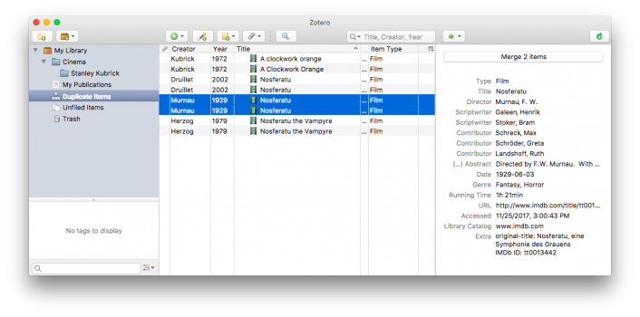

Zotero has built-in duplicate detection software to help you save space and stay organized.
As you build your Zotero library, you might introduce a few duplicated items. Zotero currently uses the the title, DOI, and ISBN fields to determine duplicates. If these fields match (or are absent), Zotero also compares the years of publication (if they are within a year of each other) and author/creator lists (if at least one author last name plus first initial matches) to determine duplicates. The algorithm will be improved in the future to incorporate other fields.
This will show all of the duplicate items in the center pane.